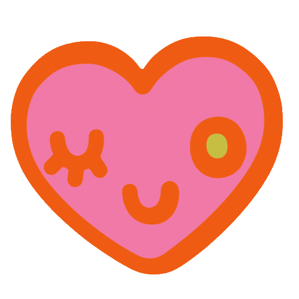

©2024
SAP Help Documentation Multimedia Design System (work in progress :D)
UX research project resulting in creation of data-driven guidelines and design system for SAP Analytics Cloud help documentation written and multimedia content (including diagrams, screenshots, simplified user interface graphics and animated videos.)
Challenge
Creation of compelling visual identity including physical assets and microsite for cultural arts client.
What I did
Principle visual designer, content strategist, and project coordinator.
Impact
Unified aesthetic and thematic experience across multimodal touchpoints showcasing textile art exhibition.
What I learned
How to present (sell) design work, justifying design decisions, increasing creativity with a research-based design approach.
exploratory ux research, identity, design system, visual design, animation
(2024)
Figma, AfterEffects, Premiere Pro, Camtasia

An opportunity for consistency
Current help lacked consistent content structure or visual design system, make it harder practically to understand and navigate, but also harder to understand. Introduction of new SAP visual design system created opportunity to update help documentation to match product updates.
Diagram Guidelines
Project began as updating diagram guidelines update to new design system. Research of diagram essentials, took infographic and information design course, also studied design system to ensure it was consistent. Considered accessibility in text sizing and colour contrast.Deliverable was Figma library and PowerPoint template with accompanying tutorial videos and written direction instructyng nondesigners (user assistance authors) on how to create diagrams in digestible, accessible way.
Animation Guildelines
Then moved on to creating animated video prototype for conceptual topics. I also made screencast videos, but we wanted to expand past 'how-to' to more introductory content. Storyboarded and designed all graphics, and completed most of animation in AfterEffects, then documented visual and animation style in internal to team styleguide ensuring future animated videos were consistent and efficient to create. In future animated videos taught rest of team how to use assets and animation guidelines to optimize animation production.
Simplified User Interface Graphics
Screenshots in help are issue because text cannot be translated and images become outdated with interface updates. To remedy this, did competitive analysis of other tech product help and decided to pursue creation of simplified user interface (SUI) graphics to draw attention to only desired aspect, eliminate text, and retain longevity with interface updates. Created simplified user interface graphics for every part of product and reusable assets for team to use in future SUI creation, as well as training nondesigner team members how to use asset library to create additional graphics.
Simplified Interface GIFs
Researching how to make interface onboarding easier and ended up pitching making GIFs for onboarding carousels. Spearheaded this project protoype and made GIFs for 3 onboarding dialogs covering new features in different parts of the product. Created simplified user interface graphics for every part of product and reusable assets for team to use in future GIF creation, as well as guidelines for when to use, and instructions for GIF creation.
Research Project
To gather more insight on what users find most effective in help documentation, and what to invest further resources into, I led a research project including external user interviews and survey. Conducted extensive secondary research of existing UX and help-related data, other tech product help competitive analysis, and then designed study and wrote discussion guide and survey questions. I moderated all sessions and conducted quantitative (using SAC) and qualitative data analysis to synthesize findings into research report. Presented report to BTP design leads, BTP UA leads, and BTP design organization.
Implementation and Advocacy
Using results of help research, I assisted in revising written help documentation guidelines, and created multimedia content guidelines. For topics out of my team scope, I contacted other stakeholders to present findings in targeted reports about specific features and opportunities, and worked with other teams to ensure user feedback was implemented in product and help changes.
My parting gift - the universal styleguide
Created unified styleguide with instructional documentation and assets to retain consistency and optimize diagram, annotated screenshot, SUI graphic, GIF, and animated video creation.
Takeaways
This project taught me to take initiative when I see opportunity for improvement, and use
data to get others on board.
Believe in your competence and others will too. I was very
nervous to conduct sessions myself with external customers around the world, but realized
that if I acted confident they would take me seriously, assuming I had everything under
control. This extended beyond sessions to realizing I was hired for my skillset and if I
believed in my competence, others would as well.
Get to know/help out who you are working with. Getting to
know development and UA colleagues, and doing favours for them initially, helped have more
reach with research findings and influence product and help portal change.
Be proactive, make your own projects. Don't wait until you
are assigned or directed to take action. When you see an opportunity, pitch and take
ownership of a new project. Don't wait for others to come to you, initiate reaching out to
them, share what you have learned and ask for what you want.
Public facing help content
More Projects
visual design, art direction, content strategy, animation
Expressive microsite created to showcase a textile art exhibit through references to thematic and visual themes.

visual design, identity
Brand identity for personal ceramics business including print and digital assets.
